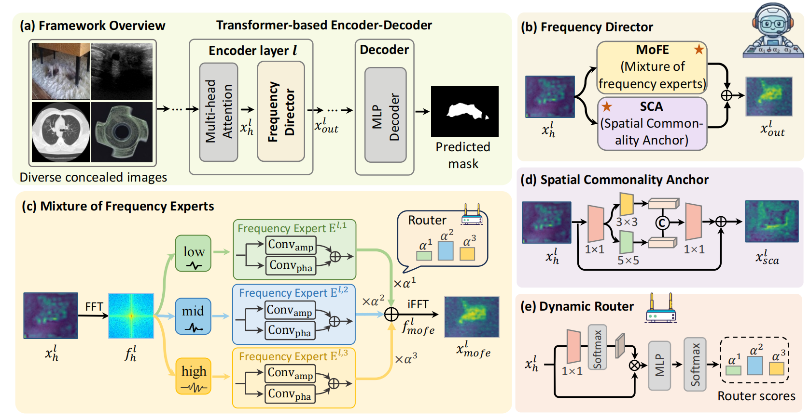

Biography
I am currently a Ph.D. student at the School of Artificial Intelligence, Northwestern Polytechnical University (NWPU), Xi'an, China, since 2023. Before that, I received my B.S. from Shaanxi University of Science and Technology, Xi'an, China, in 2021. I am advised by Prof. Shan Gao and have been fortunate to have had the opportunity to intern at ByteDance, and Tencent, and Huawei, where I gained valuable experience in both academia and industry.
My research primarily focuses on developing robust and data-efficient visual foundation models and multimodal large language models for visual perception, understanding, and generation. More recently, I have been working on two closely related directions:
1. Robust visual foundation models: improving robustness and generalization for challenging scenarios such as degraded visual inputs, non-salient targets, and remote sensing images.
2. VLM, AIGC and Agents. Core focus areas include building multimodal evaluation benchmarks for complex scenarios, constructing Agent systems for advertising creative production, and enabling controllable generation and interactive editing for AIGC tasks.
Experience
Research Intern
Tencent
Ad Creative Intelligence Agent

Research Intern
ByteDance
Unified multimodal understanding-generation modeling based on discrete diffusion models for parallel output.
Research Intern
Huawei
Robust segmentation foundation models for degraded visual inputs via generative latent-space enhancement.
News
- Jun 2026One conference paper (FreqDirect) accepted by ECCV 2026 (first author, Top-tier Comference).
- Dec 2025One first-author journal paper, VNS-SAM, accepted by IEEE TIP (CCF-A, 中科院 Q1).
- Oct 2025HANet selected as an ESI Highly Cited Paper.
- Jun 2025Attended VALSE 2025 in Zhuhai and gave a poster presentation.
- Feb 2025First-author paper GleSAM accepted by CVPR 2025 (CCF-A).
- Dec 2024SAM-COD+ accepted by IEEE TCSVT (CCF-B, 中科院 Q1).
- Jul 2024Two papers, SAM-COD and P-COD, accepted by ECCV 2024 (CCF-B).
- Apr 2024First-author paper P2P accepted by IJCAI 2024 (CCF-A).
- Feb 2024One journal paper (co-first author) accepted by IEEE TGRS (中科院 Q1, IF=8.2).
- May 2023First-author paper HANet accepted by IEEE TCSVT (CCF-B, 中科院 Q1, IF=11.1).
- Jan 2023One journal paper accepted by IEEE TNNLS (CCF-B, 中科院 Q1, IF=10.4).
Publications
